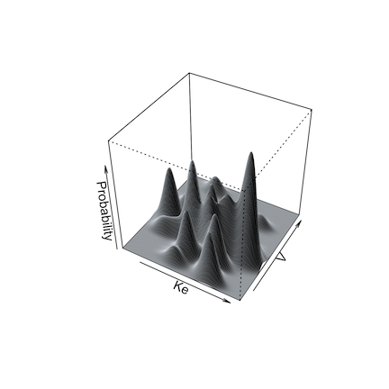

poppar = list(wt = 1,
mean = list(ke = 0.5, v = 100),
cov = matrix(c(0.04, 2.4, 2.8, 400), nrow = 2)) 11 Simulations
11.1 Introduction to simulations
The Pmetrics simulator is a powerful Monte Carlo engine that is smoothly integrated with Pmetrics inputs and outputs.
The simulator needs 3 mandatory inputs:
- Data, which serves as the template providing inputs (e.g. doses) and outputs (e.g. concentrations)
- Model, which provides the equations
- Joint probability value distributions for the parameters in the model, i.e., the prior distribution from which to sample parameter values
There are two ways to call the simulator, which we discuss in more detail below.
- Use the
$sim()method with aPM_resultobject, e.g.run1 <- PM_load(1); sim1 <- run1$sim(...) - Use
PM_simdirectly, e.g.sim2 <- PM_sim$new(...)
Whether you use PM_result$sim() or PM_sim$new(), unlike the prior versions of Pmetrics, you do not need to read the simulator output files with SIMparse; Pmetrics does that for you automatically and returns the PM_sim object.
11.2 Simulator input details
11.2.1 Data
The data template for a simulation is a PM_data object, with exactly the same structure as used for fitting models. This template contains the dosing and observation history as well as any covariates for each subject to be simulated. Each subject in the data template will serve as a template for nsim simulated profiles. You can supply the PM_data object in a number of ways.
- Use a previously created
PM_dataobject, usually from an appropriate file withPM_data$new("filename")but could be created with the$addEvent()method (see data for details) or by creating an appropriate data frame in R and passing it toPM_data$new(). - Provide the name of an appropriate data file with path if needed. Use
getwdandlist.filesto ensure the path and filename are correct. - If using
PM_result$sim(), omit thedataargument to use the data in thePM_resultas the template.
When simulating, observation values (the OUT column) for EVID=0 events in the template can take any value, which will be replaced with the simulated values. This includes observations coded as missing, OUT = -99, or censored, CENS = 1 or CENS = -1. Such scenarios are only expected if using the data from a PM_result,method 1 above to call the simulator. When making a new template, a good choice is OUT = -1 to remind you that it is being simulated, but this value is optional.
You can have any number of subject records within a data template, each with its own doses, dose times, observation times, and covariate values if applicable. Each subject will generate as many simulated profiles as you specify. You can control which subjects in the template are used and how many are simulated with the include, exclude, and nsim arguments to the simulator (see below). The first two arguments specify which subjects in the data object will serve as templates for simulation. The second specifies how many profiles are to be generated from each included subject.
11.2.2 Model
Analogous to the data template, the model for a simulation is a PM_model object, with exactly the same structure as used for fitting. You can supply the PM_model object in a number of ways.
- Use a previously created
PM_modelobject, either by defining a model list directly in R (see models for details) passing it toPM_model$new(), or from an appropriate file withPM_model$new("filename"). - Provide the name of an appropriate model file with path if needed. Use
getwdandlist.filesto ensure the path and filename are correct. - If using
PM_result$sim(), omit themodelargument to use the model in thePM_resultas the template.
The model primary (random) parameters must match the parameters in the poppar argument (see below). Any covariates in model equations must be included in the data template.
11.2.3 Population parameter distribution
The last mandatory item is a prior probability distribution for all random parameter values in the model. Pmetrics draws samples from this distribution to create the simulated output. You can supply the poppar prior object with the population parameters in a number of ways.
- Use a previously created
PM_finalobject which is a field in aPM_resultobject, e.g.run1 <- PM_load(1); poppar <- run1$final. - If using
PM_result$sim(), omit thepopparargument to use thePM_finalobject in thePM_result. - Create a
popparlist directly in R, which is detailed below. - Supply a data frame with number of rows equal to the number of simulations desired and columns with values for each parameter in the model
11.2.3.1 Details on manually specifying poppar
This is a flexible but somewhat complex means of creating a prior without a previous Pmetrics fit. It is suitable for lifting priors from published models or other sources. A manually specified prior as a list containing the following named items:
- wt vector of weights (probabilities) of sampling from each distribution. If missing, assumed to be 1. If only one distribution is to be specified the
wtvector can be omitted or should bewt = 1. If multiple distributions are to be sampled, thewtvector should be of length equal to the number of distributions inmeanand the values ofwtshould sum to 1, e.g.wt = c(0.25, 0.05, 0.7). - mean a list of mean parameter values. Each element of the list should be named with the parameter name and be a vector of length equal to the number of distributions.
- sd an optional named list of overall standard deviations for each parameter, considering parameters as unimodally distributed, i.e. there should only be one value for each parameter, regardless of the number of distributions.
sdis only needed if a correlation matrix is specified, which will be converted to a covariance matrix. - ONE of the following matrices:
- cor A square matrix of the overall correlations between parameters, again considered as unimodally distributed, i.e. there should only be one correlation matrix regardless of the number of distributions. If a correlation matrix is specified, the
sdelement is required to calculate the covariance matrix. - cov A square matrix of the overall covariances between parameters, again considered as unimodally distributed, i.e. there should only be one covariance matrix regardless of the number of distributions. If a covariance matrix is specified, the
sdelement is unnecessary, since the diagonals of the covariance matrix are the variances or squared standard deviations. The covariance matrix, whether specified ascovor as a combination ofcorandsd, will be divided by the number of distributions, i.e.length(wt), and applied to each distribution.
- cor A square matrix of the overall correlations between parameters, again considered as unimodally distributed, i.e. there should only be one correlation matrix regardless of the number of distributions. If a correlation matrix is specified, the
Examples of manually specifying poppar:
Single distribution:
Notes: Here, sd is not required because cov was specified.
Multiple distributions:
poppar = list(wt = c(0.1, 0.15, 0.75), # 3 distributions that sum to 1 mean = list(ke = c(2, 0.5, 1), v = c(50, 100, 200)), # 3 values for each parameter sd = list(ke = 0.2, v = 20), # overall sd, ignoring multiple distributions cor = matrix(c(1, 0.6, 0.7, 1), nrow = 2)) # sd required because cor specified
Notes:
11.3 Details on running the simulator
You run the simulator in two ways.
- Use the
$sim()method forPM_result()objects. This takespopparfrom thePM_result$finalfield and the model from thePM_result$modelfield, so only a data object needs to be specified at minimum. If no data object is specified, it will use thePM_result$dataas a template, i.e. the same data used to fit the model. An example is below. You don’t have to supply the model orpoppar, because they are included inrun1, withpoppartaken from therun$finalfield. Supplying a differentPM_dataobject asdatallows you to use the model and population prior fromrun1with a different dosing and observation data template. If you omitdatin this example, the original data inrun1would serve as the template.
run1 <- PM_load(1)
sim1 <- run1$sim(data = dat, nsim = 100, limits = NA)- Use
PM_sim$new(). This simulates without necessarily having completed a fitting run previously, i.e., there may be noPM_result()object. Here, you manually specify values forpoppar,model, anddata. These can be other Pmetrics objects, or de novo, which can be useful for simulating from models reported in the literature. An example is below.
sim2 <- PM_sim$new(poppar = run2$final, data = dat, model = mod1, ...)Now you must include all three of the mandatory arguments: model, data, and poppar. In this case we used the PM_final() object from a different run (run2) as the poppar, but we could also specify poppar as a list, for example. See SIMrun() for details on constructing a manual poppar.
poppar <- list(wt = 1, mean = c(0.7, 100), covar = diag(c(0.25, 900)))Under the hood, both of these calls to the simulator use the Legacy SIMrun() function, and thus all its arguments are available when using PM_result$sim(...) or PM_sim$new(...).
11.4 Simulation options
Details of all arguments available to modify simulations are available by typing ?PM_sim into the R console and clicking the link for the $new() method. A few are highlighted here.
Simulation from a non-parametric prior distribution (from NPAG) can be done in one of two ways. The first is simply to take the mean and covariance matrix of the distribution and perform a standard Monte Carlo simulation. This is accomplished by setting split = FALSE as an argument.
The second way is what we call semi-parametric (Goutelle et al. 2022). In this method, the non-parametric “support points” in the population model, each a vector of one value for each parameter in the model and the associated probability of that set of parameter values, serve as the mean of one multi-variate normal distribution in a multi-modal, multi-variate joint distribution. The weight of each multi-variate distribution is equal to the probability of the point. The overall population covariance matrix is divided by the number of support points and applied to each distribution for sampling.
Below are illustrations of simulations with a single mean and covariance for two parameters (left, split = FALSE), and with multi-modal sampling (right, split = TRUE).


Limits may be specified for truncated parameter ranges to avoid extreme or inappropriately negative values. The simulator will report values for the total number of simulated profiles needed to generate nsim profiles within the specified limits, as well as the means and standard deviations of the simulated parameters to check for simulator accuracy.
Output from the simulator can be controlled by further arguments passed to PM_result$sim() or PM_sim$new(). If makecsv is supplied, a .csv file with the simulated profiles will be created with the name as specified by makecsv; otherwise, there will be no .csv file created.
11.5 Simulation output
As of version 2.0, simulation output is returned as the new PM_sim() object that was assigned to contain the results of the simulation. There are no files written to the hard drive. You no longer need to use the Legacy function SIMparse().
If you simulated from a template with multiple subjects, your simulation contains output from each template as an id column, and each id will have nsim profiles.
PM_sim() objects have 6 data fields and 6 methods.
11.5.1 Data fields
Data fields are accessed with $, e.g. sim1$obs.
- amt A data frame with the amount of drug in each compartment for each template subject at each time.
- obs A data frame with the simulated observations for each subject, time and output equation.
- parValues A data frame with the simulated parameter values for each subject.
- totalCov The covariance matrix of all simulated parameter values, including those that were discarded to be within any
limitsspecified. - totalMeans The means of all simulated parameter values, including those that were discarded to be within any
limitsspecified. - totalSets The number of simulated sets of parameter values, including those that were discarded to be within any
limitsspecified. This number will always be ≥nsim.
All of these are detailed further in PM_sim.
11.5.2 Methods
Methods are accessed with $ and include parentheses to indicate a function, possibly with arguments e.g. sim1$auc() or sim1$save("sim1.rds").
- auc Call
make_AUCto calculate the area under the curve from the simulated data. - pta Call
PM_ptato perform a probability of target attainment analysis with the simulated data. - plot Call
plot.PM_simto plot the simulated data. - summary Call
summary.PM_simto summarize any data field with or without grouping. - save Save the simulation to your hard drive as an .rds file. Load a previous one by providing the filename as the argument to
PM_sim$new().
All of these are detailed further in PM_sim.To apply them to one of the simulations when there are multiple, use at followed by additional arguments to the method to choose the simulation.
sim1$plot(include = 2, ...)11.6 Set up the tutorial environment
Tip
Make sure you have run the tutorial setup code in your R session before copying, pasting and running example code here.
11.7 Basic simulation
The following will simulate 100 sets of parameters/concentrations using the model, population parameter values, first subject in the data all attached to run1 (exercise on first NPAG run).
Setting limits = NA makes the simulated parameter values stay within the same ranges as in the model for run1.
simdata <- run1$sim(include = 1, limits = c(0,3), nsim = 100)
#> ℹ Simulation messages:
#> • Prior obtained from `PM_result`.
#> • Model obtained from `PM_result`.
#> • Data obtained from `PM_result`.Below is the alternate way to simulate, which is particularly useful if you define your own population parameters. See ?PM_sim for details on this as well as the article on simulation.
# define population parameters for simulation
poppar <- list(
mean = list(ka = 0.6, ke = 0.05, k23 = 0.2, k32 = 0.2, v = 77.8, lag1 = 1.2),
cov = diag(c(0.07, 0.0004, 0.02, 0.02, 830, 0.45))
)
# now we need to provide parameter value distributions (poppar), data, and model
simOther <- PM_sim$new(poppar = poppar, data = exData, model = mod1,
include = 1, limits = NA, nsim = 100)Simulate from a model with new data.
sim_new <- run1$sim(
data = "src/ptaex1.csv",
include = 2, limits = NA,
predInt = c(120, 144, 1)
)#>
#> ── DATA STANDARDIZATION ────────────────────────────────────────────────────────
#> ADDL doses were expanded at II intervals.
#> All observations assumed to be uncensored.
#> ADDL > 0 rows expanded.
#>
#> ── DATA VALIDATION ─────────────────────────────────────────────────────────────
#> No data errors found.
#> ℹ Simulation messages:
#> • Prior obtained from `PM_result`.
#> • Model obtained from `PM_result`.Plot them; ?plot.PM_sim for help.
simdata$plot()
simOther$plot()
sim_new$plot(log = FALSE) Simulate using multiple subjects as templates.
simdata <- run1$sim(include = 1:4, limits = NA, nsim = 100)
#> ℹ Simulation messages:
#> • Prior obtained from `PM_result`.
#> • Model obtained from `PM_result`.
#> • Data obtained from `PM_result`.Plot the third simulation; use include/exclude to specify the ID numbers, which are the same as the ID numbers in the template data file
simdata$plot(include = 3) # one regimen
simdata$plot(exclude = 3) # all but one regimen; notice the jagged profiles arising from combining different regimens11.8 Simulate with covariates
In this case we use the covariate-parameter correlations from run 2, which are found in the cov field. We re-define the mean weight to be 50 with SD of 20, and limits of 10 to 70 kg. We fix africa, gender and height covariates, but allow age (the last covariate) to be simulated, using the mean, sd, and limits in the original population, since we didn’t specify them. See ?SIMrun for more help on this.
covariate <- list(
cov = run2$cov,
mean = list(wt = 50),
sd = list(wt = 20),
limits = list(wt = c(10, 70)),
fix = c("africa", "gender", "height")
)Now simulate with this covariate list object.
simdata3 <- run2$sim(include = 1:4, limits = NA, nsim = 100, covariate = covariate)
#> Recompiling model to include covariates...
#> ℹ Simulation messages:
#>
#> • Prior obtained from `PM_result`.
#>
#> • Model obtained from `PM_result`.
#>
#> • Data obtained from `PM_result`.There are subtle differences between simulations with and without covariates simulated, all other inputs the same.
simdata$plot(include = 4) # without covariates
simdata3$plot(include = 4) # ...and with covariates simulatedHere are the simulated parameters and covariates for the first subject’s template; note that both wt and age are simulated, using proper covariances with simulated PK parameters.
simdata3$data$parValues
#> # A tibble: 100 × 9
#> nsim ka ke k23 k32 v0 lag1 age wt
#> <int> <dbl> <dbl> <dbl> <dbl> <dbl> <dbl> <dbl> <dbl>
#> 1 1 0.127 0.0615 1.35 4.98 39.9 3.36 33.0 15.8
#> 2 2 0.129 0.0647 1.45 4.98 36.4 3.05 23.1 22.4
#> 3 3 0.131 0.0691 1.27 4.98 42.3 2.38 22.5 27.6
#> 4 4 0.142 0.0914 0.0107 4.99 89.3 0.505 25.3 49.1
#> 5 5 0.123 0.0919 0.145 4.99 88.9 0.786 29.6 52.8
#> 6 6 0.148 0.0854 0.0776 4.99 103. 0.591 26.4 42.2
#> 7 7 0.142 0.0935 0.127 4.99 96.1 0.279 29.4 59.4
#> 8 8 0.137 0.0832 0.181 4.99 89.7 1.05 27.5 39.9
#> 9 9 0.165 0.0904 0.0282 4.99 104. 0.136 28.3 64.7
#> 10 10 0.147 0.0904 0.117 4.99 105. 0.327 29.1 50.7
#> # ℹ 90 more rowsWe can summarize simulations too. See ?summary.PM_sim for help.
simdata3$summary(field = "obs", include = 3)
#> stat time out outeq
#> 1 mean 127.79 8.76 1
#> 2 sd 7.80 6.62 0
#> 3 median 126.08 7.15 1
#> 4 min 120.08 1.51 1
#> 5 max 144.08 51.41 1Next, we’ll see the first of two applications of simulation: Probability of Target Attainment (PTA).
11.9 Citations
Goutelle, Sylvain, Jean-Baptiste Woillard, Michael Neely, Walter Yamada, and Laurent Bourguignon. 2022. “Nonparametric Methods in Population Pharmacokinetics.” The Journal of Clinical Pharmacology 62 (2): 142–57. https://doi.org/10.1002/jcph.1650.